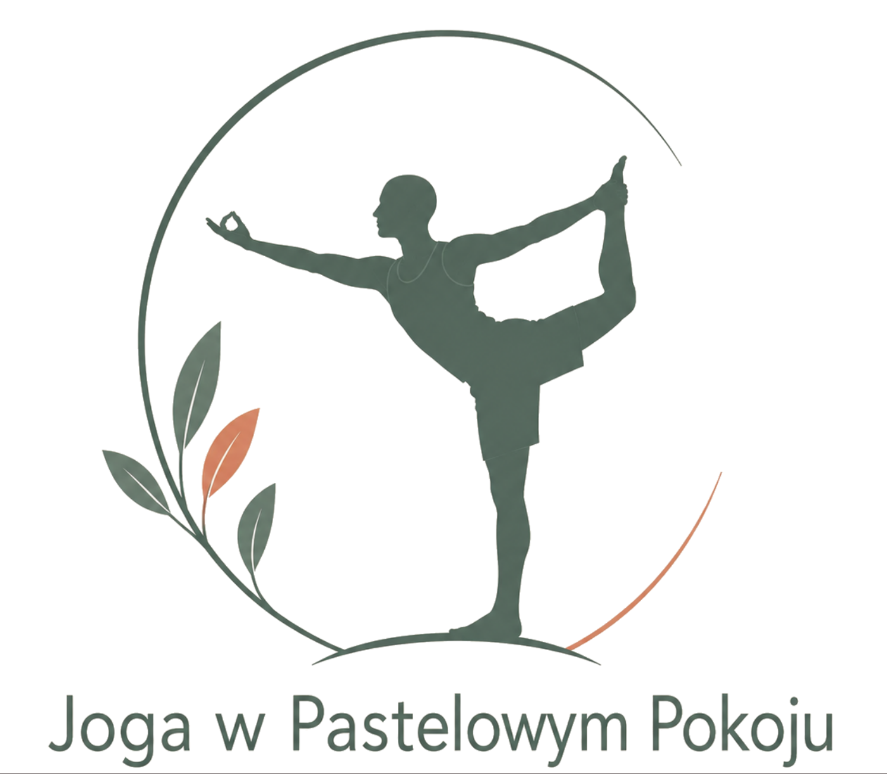

Poniedziałek
Energia na cały tydzień
Joga
🕖

...dla życia w szczęściu i zdrowiu
Twoje studio jogi w KościanieWitamy w „Joga w Pastelowym Pokoju”. To kameralne miejsce stworzone w naszym domu – z myślą o osobach, które szukają spokoju, autentyczności i uważnej praktyki.
Tu praktykujesz w kameralnej atmosferze, pod okiem doświadczonych nauczycieli, którzy wspierają Cię na Twojej indywidualnej drodze – niezależnie od poziomu zaawansowania.
Odkryj miejsce, w którym harmonia spotyka się z ruchem.
Zapraszamy na matę, abyśmy wspólnie dbali o zdrowie i spokój ducha.
Nasza wspólna podróż przez życie zaczęła się latem 2020 roku. Wtedy się poznaliśmy, a połączyła nas joga. Naszym pierwszym jogowym projektem był kurs nauczycielski RYT 200 w Olala Yoga w Szczecinie. Zaraz po jego ukończeniu zaczęliśmy prowadzić zajęcia, ale cały czas chcieliśmy więcej. Właśnie dlatego w 2023 roku powstała Joga w Pastelowym Pokoju. W naszym domu urządziliśmy miejsce, do którego zapraszaliśmy przyjaciół, dalszych i bliższych znajomych, i prowadziliśmy dla nich zajęcia. Czuliśmy, że to jest to.
Ludzi było coraz więcej, a my myśleliśmy, co zrobić, aby nasza joga była jeszcze lepsza i ciekawsza. I wtedy pojawił się kolejny impuls - Rishikesh. W lipcu 2024 roku polecieliśmy na kurs do Indii. To była przygoda życia. Poznaliśmy podobnie myślących joginów z całego świata. Ćwiczyliśmy pod okiem najlepszych nauczycieli, pełnych pasji i przenikniętych jogą na wskroś. Czuliśmy, że zrobiliśmy wielki krok w przyszłość. Joga jest dla nas filozofią życia, praktyka asan - laboratorium, w którym poznajemy siebie, swoje możliwości i ograniczenia oraz badamy reakcje umysłu na trudy i sukcesy. Jeśli chcesz odkryć swoją prawdę, przyjdź do nas i stań z nami na macie.
Zajęcia prowadzimy w małych grupach, dzięki czemu możemy skupić się na Twoich indywidualnych potrzebach i stworzyć bezpieczną, wspierającą atmosferę. To przestrzeń wolna od pośpiechu i porównań – możesz po prostu być sobą.

Spokój w ruchu: Julita wnosi harmonię do każdej praktyki jogi. Asany postrzega jako równowagę między mobilnością a wzmocnieniem. Pod jej uważnym okiem każdy odnajdzie wariant dopasowany do potrzeb ciała i duszy.

Medytacja w ruchu: Jens praktykuje płynne, dynamiczne style jogi, takie jak Vinyasa i Inside Flow. Jego zajęcia nigdy nie są takie same – lubi improwizować i łączyć jogę z innymi formami ruchu, np. Primal Moves.
Poniedziałek
Joga
🕖
Środa
Joga na zdrowy kręgosłup
🕖
Czwartek
Pilates
🕖
Indywidualne terminy
Masaże ajurwedyjskie
📞 Zarezerwuj swój termin
📄 Zobacz aktualny cennik masaży ajurwedyjskich
Dołącz do nasZrób pierwszy krok. Wypełnij formularz i dołącz do nas.
Joga w Pastelowym Pokoju, ul. Słoneczna 12, 64-000 Kościan, Nowy Lubosz
Czy nadaję się do jogi? Jestem bardzo sztywna.
Właśnie takie osoby są u nas najmilej widziane. Nie musisz być elastyczna, żeby zacząć. Pokażemy Ci, jak krok po kroku zwiększyć mobilność i poczuć się lepiej w swoim ciele.
Czy potrzebuję maty?
Nie. Zapewniamy maty oraz wszystkie potrzebne akcesoria. Jeśli joga stanie się Twoją regularną praktyką, własna mata z czasem zwiększy Twój komfort.
Jak powinnam się ubrać?
Przyjdź w wygodnym ubraniu. Najlepiej sprawdzą się legginsy lub dresy oraz komfortowa koszulka, która nie krępuje ruchów.
Masz jeszcze pytania? Napisz do nas.